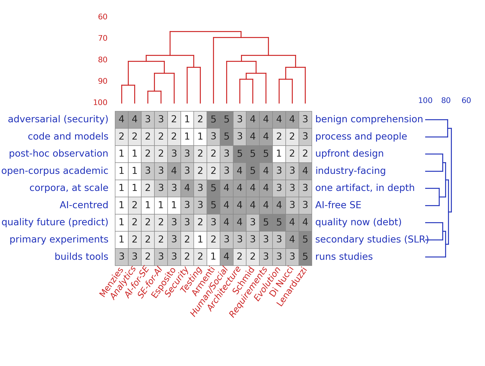

Menzies, Schmid, Lenarduzzi, Di Nucci, Esposito, Armenti · 2026
github.com/timm/how2rite ·
the paper (PDF)
0 together · 1 know · 2 map · 3 read · 4 grammar · 5 prose · 6 critics · 7 pause · 8 receipts · ✎ prompts · ★ advanced
Eight tricks for writing papers with LLMs, plus a step 0 on how a team divides the work. The tricks are independent. Use none, one, or all of them. Each is a two-minute read. Start from whatever you already have and skip the rest. The tree below says where to start.
Where are you? (each leaf links to a trick)
have topic? ─no─▶ (1) (2) │ score the team; score the venue │yes │ have abstract? ─no─▶ (3) │ sort by cites; read the top │yes │ have full draft? ─no─▶ (4) (5) │ draft from a grammar; then cut │yes │ reviews back? ─no─▶ (6) (8) │ review it yourself; check claims │yes │ ▼ │ (6) (5) (8) │ re-run the review; rewrite; │ check the response letter │ at any point: │ more than one author? ─▶ (0) │ each author picks a level dividing up sections? ─▶ (1) │ score authors × sections machine did the work? ─▶ (7) │ pause; check the settings
Before writing: decide how the team writes.
Write together —
eleven levels of LLM use, from Gemini inside a Google Doc to agents
that open pull requests. Authors need not agree on a level.
Each picks their own. Git merges the results.
Find what your team is good at.
Know thyself —
“If you're a bit better than most at a particular kind
of analysis or a specific domain, choose research topics where
you can use that” (Herb Simon).
Authors misreport their own strengths, so score them from their
papers instead. An LLM reads 1,200 paper records in minutes and
runs the repertory grid interview.

A repertory grid, scoring six authors against nine topic areas from one venue. An LLM builds such a grid in a minute or two. See 1 and 2.
Pick a topic.
Map team to field —
score the venue's topics on the same grid as your people, then match
the two. Three ways to match: the team average, the team's weakest
member, or a blend. The gaps show what the team would have to learn.
Too much related work.
Read the top papers —
do not read all of it. Name the venues inside the query. Sort by
cites. Read the top papers, plus a few others you judge important.
From those, follow citations forward and back.
Blank page.
Write to a grammar —
a paper has a fixed shape: intro, lit review, methods, threats,
conclusion. Write that shape as a small grammar and draft from it.
If you disagree with the shape, edit the grammar and draft again.
That costs minutes.
Draft reads like AI.
Cut the slop —
keep the ASD-STE100 rules: short sentences, active voice, one
meaning per word. Cut the hooks and the applause paragraphs. Put
the banned words in a linter, then rewrite by hand what the linter
breaks.
Before you submit.
Assemble critics —
review the paper yourself first. Give an LLM the venue's own review
form and let it write the review. Then sort its comments into two
piles: what a machine can fix, and what you must decide.
The machine did the work.
Pause and reflect —
every computed step ends in a box holding two things: the questions
a reviewer should ask, and the setting to change. The human keeps
the settings.
Check your claims.
Keep the receipts —
put a clickable DOI on every citation. Report significance and
effect size with every claim. Make the conclusion repeat the intro,
with numbers. Re-score your own title and abstract; the scores
should not move.
Words to paste.
✎ Sample prompts —
one prompt per trick: the grid interview, the lit search, the STE
rewrite, learning a grammar, Reviewer 2, triage, and the claim
audit.
Past the eight.
★ Advanced tricks —
learn a grammar from papers you admire rather than writing one by
hand. Tune it per venue. Parse drafts against it. Learn a second
grammar from bad papers and check against that too.
Engine: github.com/timm/rite. Comments to timm@ieee.org.